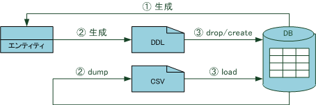

概要
S2JDBC-Genとは、S2JDBC を使った開発をサポートするツールです。 J2JDBC-Genは、保守・運用といったフェーズではなく開発のフェーズを対象としています。 S2JDBC-Genを利用することで、データベーススキーマの修正をJavaのエンティティクラスに反映させるといったこれまでの開発スタイルではなく、 エンティティクラスの修正をデータベーススキーマに反映させるといった新しい開発スタイルが可能になります。
S2JDBC-Genは、Javaのコード修正によるデータベースリファクタリングを実現します。
主な機能には次のようなものがあります。
- データベースからエンティティクラスのJavaコードを生成する機能
- エンティティクラスからDDL(Data Definition Language)スクリプトとCSV形式のダンプデータを生成し、バージョン管理する機能
- バージョン管理されたDDLスクリプトとダンプファイルを使用してデータベーススキーマをマイグレーションする機能

「データベースからエンティティクラスのJavaコードを生成する機能」は最初に一度だけ行われる初期インポートに相当します。 エンティティの生成後は、エンティティを直接修正してDDLを生成し、DDLとデータをデータベースに適用するというプロセスを繰り返すことができます。
S2JDBC-Genの様々な機能は、Apache Ant を使って起動できるようになっています。 セットアップの方法はセットアップ を参照ください。 S2JDBC-Genが提供するAntタスクについてはタスク一覧 を参照ください。
ダウンロードはダウンロードのページ から行ってください。
EclipseプラグインのDoltengを使う場合は、Doltengにより必要なjarファイルを用意できるのでダウンロードは不要です。 DoltengについてはDoltengの利用 を参照してください。
主な機能
エンティティクラスの生成
テーブルに対応するエンティティクラスのJavaコードを生成できます。 外部キーが存在する場合は、クラスの関連付けも行います。
たとえば、次のDDLで表されるDEPARTMENTテーブルとEMPLOYEEテーブルがデータベース上に存在するとします。
create table DEPARTMENT (
DEPARTMENT_ID integer not null primary key,
DEPARTMENT_NAME varchar(20)
);
create table EMPLOYEE (
EMPLOYEE_ID integer not null primary key,
EMPLOYEE_NAME varchar(20),
DEPARTMENT_ID integer,
CONSTRAINT fk_department_id foreign key(DEPARTMENT_ID) references DEPARTMENT(DEPARTMENT_ID)
);
S2JDBC-Genはデータベース上のテーブルの定義から次のような2つのエンティティクラスのJavaコードを生成できます。
/**
* Departmentエンティティクラスです。
*
* @author S2JDBC-Gen
*/
@Entity
public class Department {
/** departmentIdプロパティ */
@Id
@GeneratedValue
@Column(nullable = false, unique = true)
public Integer departmentId;
/** departmentNameプロパティ */
@Column(length = 20, nullable = true, unique = false)
public String departmentName;
/** employees関連プロパティ */
@OneToMany(mappedBy = "department")
public List<Employee> employeeList;
}
/**
* Employeeエンティティクラスです。
*
* @author S2JDBC-Gen
*/
@Entity
public class Employee {
/** employeeIdプロパティ */
@Id
@GeneratedValue
@Column(nullable = false, unique = true)
public Integer employeeId;
/** employeeNameプロパティ */
@Column(length = 20, nullable = true, unique = false)
public String employeeName;
/** departmentIdプロパティ */
@Column(nullable = true, unique = false)
public Integer departmentId;
/** department関連プロパティ */
@ManyToOne
@JoinColumn(name = "DEPARTMENT_ID", referencedColumnName = "DEPARTMENT_ID")
public Department department;
}
詳しくは、Gen-Entity タスクを参照ください。
DDLの生成
エンティティクラスからDDLスクリプトを生成できます。 サポートしているデータベースオブジェクトは次の通りです。
- テーブル（主キー、NOT NULL制約、デフォルト値等の定義も含む）
- IDの採番用のシーケンス（使用するデータベースがシーケンスをサポートし、IDの採番をシーケンスを使って行う場合）
- 一意キー
- 外部キー
たとえば、データベースHSQLDBを使用している場合、上で示したEmployeeクラスからは次のようなスクリプトが出力されます。
create table EMPLOYEE (
ID integer generated by default as identity(start with 1),
EMPLOYEE_NAME varchar(20),
DEPARTMENT_ID integer,
constraint EMPLOYEE_PK primary key(ID)
);
alter table EMPLOYEE add constraint EMPLOYEE_FK1 foreign key (DEPARTMENT_ID) references DEPARTMENT (ID);
drop table EMPLOYEE;
alter table EMPLOYEE drop constraint EMPLOYEE_FK1;
データベースオブジェクト作成用のDDLスクリプトだけでなく削除用のDDLスクリプトも合わせて生成されます。 生成されたDDLスクリプトはS2GDBC-Genによりバージョン管理されます。
上に挙げたもの以外のデータベースオブジェクト（ビュー、トリガー、ストアドプロシージャーなど）は、S2JDBC-Genによって生成はされませんが、 これらのDDLスクリプトを別途作成して特定のディレクトリに格納すれば、S2JDBC-Genの管理下に置くことができます。
S2JDBC-GenはDDL生成時にデータベースのデータをCSV形式でダンプ出力できます。 この機能を利用すると、DDLスクリプトとDDLスクリプトに対応したデータを一緒に管理できます。
詳しくは、Gen-Ddl タスクやDDL生成のためのエンティティ定義 を参照ください。
マイグレーション
バージョン管理されたDDLを使用して、データベーススキーマの再作成を実行できます。 新しいデータベーススキーマの作成後、バージョン管理されたCSV形式のデータを自動でロードすることもできます。
マイグレーションの大まかな処理の流れは次の通りです。
- 古いバージョンのデータベーススキーマを削除する。
- 新しいバージョンのデータベーススキーマを作成する。
- 新しいバージョンのデータをロードする。
- 新しいバージョンのデータベーススキーマに外部キーを適用する。
独自のDDLスクリプトを作成し、S2JDBC-Genの管理下においておけば、 そのスクリプトの実行は上記の処理の中に組み込むことができます。
Subversionなどのソースコード管理ツールでDDLスクリプトとデータを管理しておくと、 マイグレーション機能と組み合わせて複数のPCで動作している開発用データベースを簡単に同期させられます。
詳しくは、Migrate タスクを参照ください。
S2JDBC-Genの効果的な利用法
S2JDBC-Genを効果的に利用するには、S2JDBC-Genに適した開発スタイルと開発環境が重要です。
開発スタイル
S2JDBC-Genに適した開発スタイルとは、上記で説明したようにDDLの生成とマイグレーションを何度も繰り返すような開発スタイルです （すでにデータベーススキーマが存在するときのみ、エンティティクラスをデータベーススキーマから生成します）。 エンティティクラスへの修正をデータベーススキーマに反映させるため、Javaコード中心の開発スタイルと言えます。 この開発スタイルでは、エンティティクラスや依存する他のクラスの修正を、EclipseなどのIDEのリファクタリング機能を利用して行えるというメリットがあります。
逆に、S2JDBC-Genに適さない開発スタイルとは、データベーススキーマの修正のたびにデータベーススキーマからエンティティクラスを生成しなおす開発スタイルです。 これは、データベーススキーマ中心の開発スタイルと言えます。 この開発スタイルでは、データベースから自動生成する部分と、手動で変更を加える部分を分離するGeneration Gapパターンの利用が一般的です。 しかし、S2JDBC-Genでは、データベースからのエンティティクラスの生成は最初の一度だけのみ行うことを想定しているためGeneration Gapパターンは採用していません。 S2JDBC-Genでは、直接修正しやすいシンプルなコードを生成します。 データベーススキーマ中心の開発スタイルを採用する場合は、S2JDBCとS2JDBC-Genの組み合わせよりも、DBFlute の利用を検討してみてはいかがでしょうか。
開発環境
S2JDBC-Genを使った開発では、次の環境が前提となります。
- データベースは開発者ごとに用意する
- Subversionなどのバージョン管理ツールを利用してソースコードを管理する
データベースを開発者ごとに用意するのは、データベーススキーマの修正作業が他の開発者の作業を妨げないようにするためです。
ある環境で、データベーススキーマの修正が正しく動作することを確認できたら、Javaソースコード、DDL、ダンプデータを他の開発者と共有する必要があります。 その共有にバージョン管理ツールを利用します。 バージョン管理ツールを利用することで、開発のどの段階であってもJavaのクラスとデータベーススキーマの一貫性を保つことができます。
対応データベース
S2JDBC-Genでは次のデータベースに対応しています。
- Oracle Database
- IBM DB2
- Microsoft SQL Server
- MySQL
- PostgreSQL
- H2 Database Engine
- HSQLDB
- Derby
ここに挙げた以外のデータベースについてもできる限り動作するように試みていますが、完全には動作しない可能性が高いです。 必要であれば対応しますので、どのように動作しないか情報提供をメーリングリスト までお願いします。